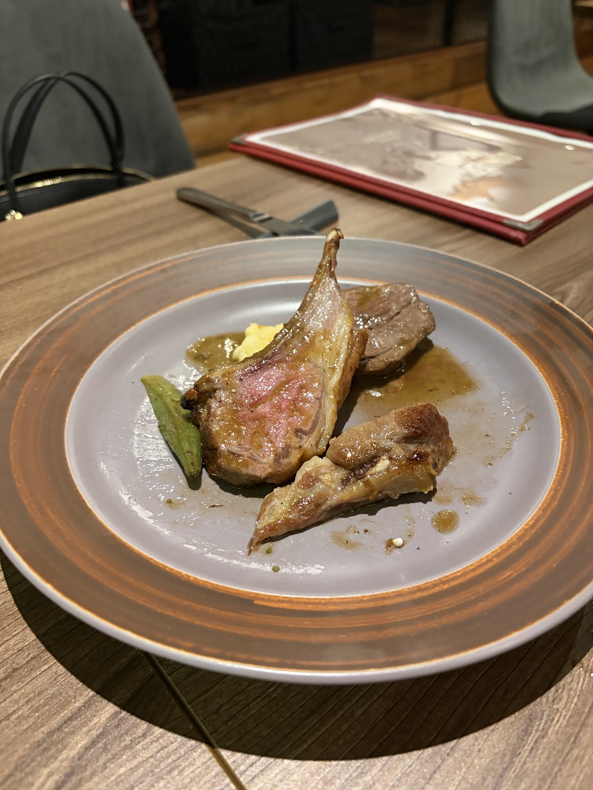
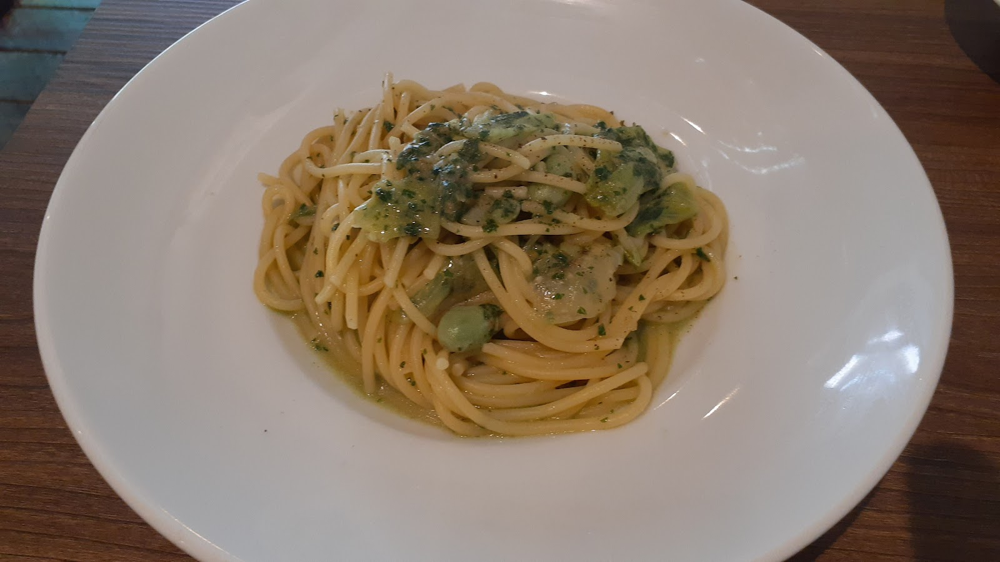
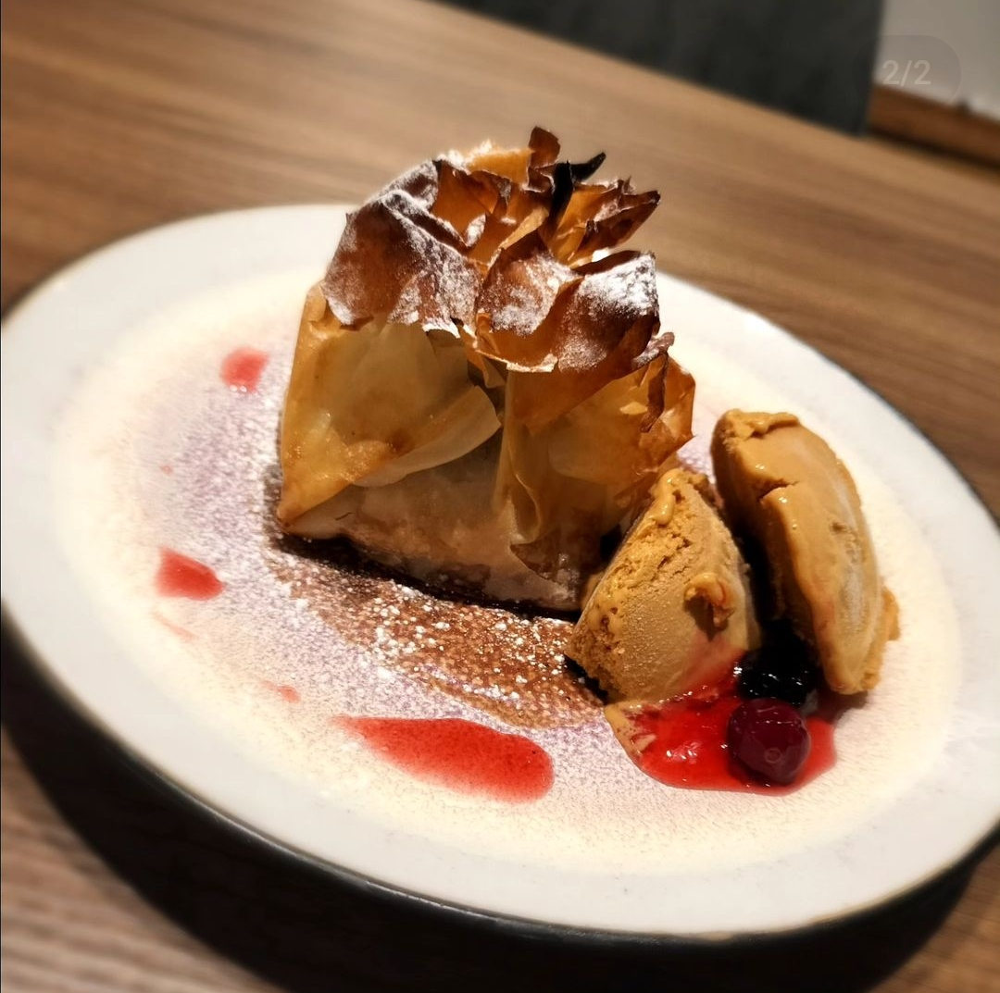

茨城県取手市 フレンチビストロ
家族の温かさと、丁寧な一皿で。取手のフレンチビストロ「ビストロ キャトル」
茨城県取手市にある、家族で営む小さなフレンチビストロです。仕込みから盛り付けまで、一皿ずつ丁寧に仕上げています。
写真: yoshi i(Google マップ)
Features
お店の強み
Gallery
料理のご紹介
実際にご提供している料理の一部をご紹介します。



写真提供: inb bz, kiyumi kanata, ビストロ キャトル(Google マップ)
Reviews
お客様の声
4.1
(Googleクチコミ 39件)
Mieこじんまりとして良い雰囲気のお店です。ホールの方はとても優しい雰囲気の笑顔の素敵な女性でいただいたリゾットもとても美味しかったです。また伺います。
kiyumi kanata……家族経営でアットホームな雰囲気のお店です。
13 T……手間がかかる内容だし、素材も安くは無いのも判るけど……
すべてのクチコミはクチコミページでご覧いただけます。